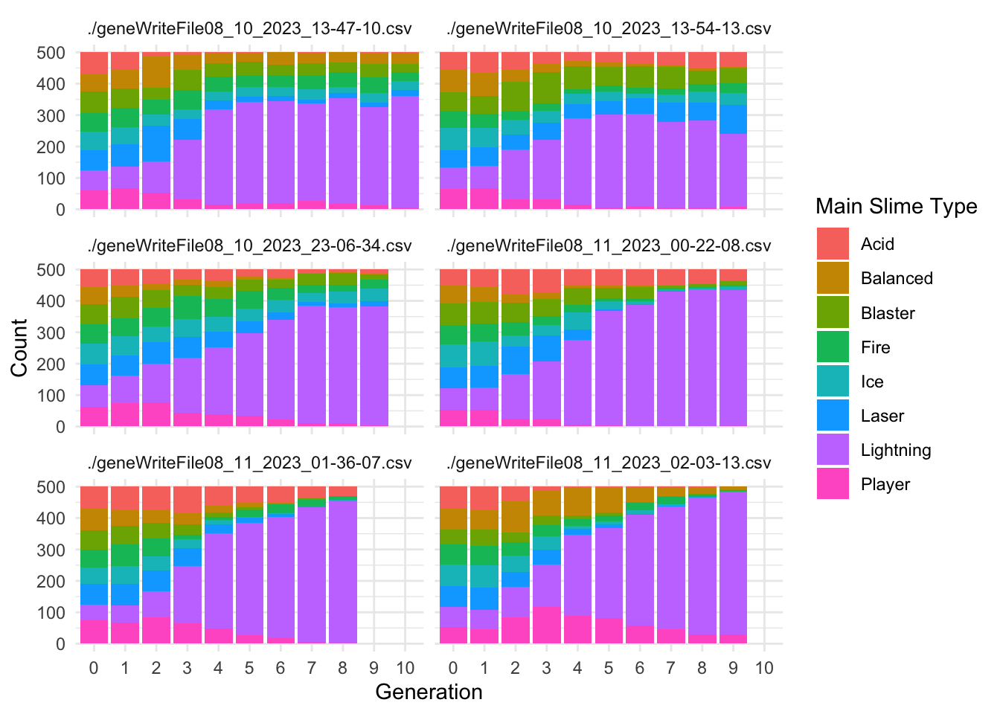
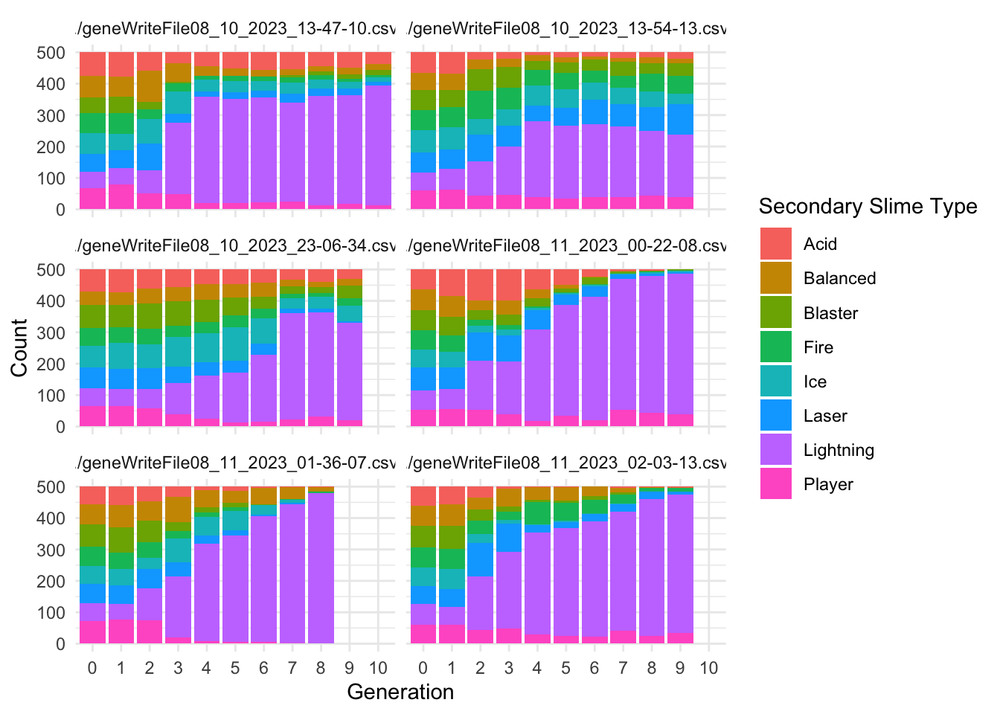

How can we encode a damage resistance game mechanic that interacts well with a generational model of evolution?
Author
Barrie D. Robison
Published
August 9, 2023
Is it really an Evolutionary game?
When we are developing our games, we perform extensive testing to make sure the underlying biological models are performing as expected. In the case of evolutionary games, we need to test that the population of enemies is indeed adapting the game conditions as we intended. This post is (I hope) the first in a series in which we document those tests.
My hope is that performing these tests in this format will serve as an organized archive of our analyses, improving reproducibility and rigor. I also have a vain glimmer of hope that some person other than me might actually be interested in this topic.
PROJECT TWIN STICK
This is intended to be an evolutionary shooter. The game is described in detail here.
DATA
In this section, we ingest the data from whatever runs are relevant to the analysis. The data are written from the project in .csv files. The following code reads all .csv files from the working directory. It creates new variables for the source file name (file) and the number of offspring produced by each individual (offspring_count). It then appends all the data files into a single data frame called allfiles. I also create a few aggregations of the data by generating mean values of interest (traits, genes, fitness estimates) for each generation in each file (TraitAvg, GeneAvg, FitAvg)
Variables that end in .Gene are the values of the genome for that particular locus. Variables that end in .Trait are the values of the trait for that particular locus. Variables that end in .Fitness are the values of that particular Fitness component.
EXPERIMENTAL CONDITIONS
The enemies in this game are slimes of several different types. These types correspond to the different damage types that can be caused by the player’s towers (Lightning, Ice, Fire, etc). Our initial idea is that the slimes of a specific type should be resistant to that type of damage. The average resistance of the whole population should increase over time if the player relies on only one type of tower.
Where Main.Type and Secondary.Type = 1 if they match the Damage Type and 0 if they do not.
Our hypothesis is that resistance of the population will adapt to the damage type of the defense used. If true, this hypothesis predicts that the mean resistance of the population will increase over time, primarily through the proliferation of slimes of a Type that matches the Damage Type.
We constructed a simple defense in the center of the playing area, consisting of three towers. The only Fitness Function at this time is related to Path Distance to the Player (the closer they get to the player, the more fitness they acquire).
RESULTS
Slime Types
Each Slime has a Main.Type and a Secondary.Type. These types use the ~.Resistance.~ category to confer resistance to the appropriate damage type.
The following code creates two summary dataframes with the suffix ~Typecounts that count the number of slimes of each ~.Type in each generation for each replicate. It then creates the graphs of ~Type frequency over time.
Code
MainTypecounts <- allfiles %>%group_by(Main.Type, Generation, file) %>%summarise(Main.count =n(), .groups ="drop")SecondaryTypecounts <- allfiles %>%group_by(Secondary.Type, Generation, file) %>%summarise(Secondary.count =n(), .groups ="drop")ggplot(MainTypecounts, aes(x = Generation, y = Main.count, fill =as.factor(Main.Type))) +geom_col(position ="stack") +labs(x ="Generation", y ="Count", fill ="Main Slime Type") +theme_minimal()+facet_wrap(~file, ncol=2)

Code
ggplot(SecondaryTypecounts, aes(x = Generation, y = Secondary.count, fill =as.factor(Secondary.Type))) +geom_col(position ="stack") +labs(x ="Generation", y ="Count", fill ="Secondary Slime Type") +theme_minimal()+facet_wrap(~file, ncol=2)

These results do not align with the predictions of our hypothesis. There is a modest increase in the Lightning Secondary.Type.
Slime Fitness
In most cases, it is useful to summarize the behavior of the fitness function for each experiment. In this case, the fitness function calculates a value of 50,000/(distance to player +1). I will also reverse calculate that for visualization. We then use Roulette Wheel selection to determine the parents of the next generation.
Code
ggplot(allfiles, aes(x=Wave.Number, y= Path.Distance.To.Player))+geom_jitter(aes(x=Wave.Number, y= Path.Distance.To.Player, color = offspring_count, alpha = offspring_count))+geom_smooth()+facet_wrap(~file, ncol =2)+scale_color_continuous(low="blue", high ="red")
`geom_smooth()` using method = 'gam' and formula = 'y ~ s(x, bs = "cs")'
ggplot(allfiles, aes(x=Wave.Number, y= Player.Distance.Fitness))+geom_jitter(aes(x=Wave.Number, y= Player.Distance.Fitness, color = offspring_count, alpha = offspring_count))+geom_smooth()+facet_wrap(~file, ncol =2)+scale_color_continuous(low="blue", high ="red")
`geom_smooth()` using method = 'gam' and formula = 'y ~ s(x, bs = "cs")'
Code
ggplot(allfiles, aes(x=Path.Distance.To.Player, y = Player.Distance.Fitness))+geom_point(aes(x=Path.Distance.To.Player, y = Player.Distance.Fitness), alpha =0.5)+facet_wrap(~file, ncol =2)+scale_color_continuous(low="blue", high ="red")
---title: "Testing Evolution in Project TwinStick"subtitle: "1 - The Evolution of Damage Resistance"description: "How can we encode a damage resistance game mechanic that interacts well with a generational model of evolution?"author: "Barrie D. Robison"date: "August 9, 2023"code-fold: true code-tools: true---Is it really an *Evolutionary* game?When we are developing our games, we perform extensive testing to make sure the underlying biological models are performing as expected. In the case of evolutionary games, we need to test that the population of enemies is indeed adapting the game conditions as we intended. This post is (I hope) the first in a series in which we document those tests.My hope is that performing these tests in this format will serve as an organized archive of our analyses, improving reproducibility and rigor. I also have a vain glimmer of hope that some person other than me might actually be interested in this topic.## PROJECT TWIN STICKThis is intended to be an evolutionary shooter. The game is described in detail [here](../Games/TwinStick/index.qmd).## DATAIn this section, we ingest the data from whatever runs are relevant to the analysis. The data are written from the project in `.csv` files. The following code reads all `.csv` files from the working directory. It creates new variables for the source file name (`file`) and the number of offspring produced by each individual (`offspring_count`). It then appends all the data files into a single data frame called `allfiles`. I also create a few aggregations of the data by generating mean values of interest (traits, genes, fitness estimates) for each generation in each file (`TraitAvg`, `GeneAvg`, `FitAvg`)```{r}#| output: falselibrary(tidyverse)library(pheatmap)files <-list.files(pattern ="*.csv", full.names =TRUE)allfiles =data.frame()for(csv in files){ Twin3 <-read.csv(csv, as.is=T, header=T) Twin3['file'] = csvTwin3<-Twin3%>%mutate(Unique.Slime.ID =paste(Wave.Number, ".", Slime.ID))%>%mutate(Unique.Parent.One =paste(Wave.Number-1, ".", Parent.One))%>%mutate(Unique.Parent.Two =paste(Wave.Number-1, ".", Parent.Two))df_parents <- Twin3 %>%select(Unique.Parent.One, Unique.Parent.Two) %>%pivot_longer(cols =everything(), names_to ="parent_type", values_to ="parent_id")# Count the number of offspring for each parentoffspring_counts <- df_parents %>%group_by(parent_id) %>%summarise(offspring_count =n(), .groups ="drop")offspring_counts <- offspring_counts%>%filter(parent_id !="-1 . N/A")offspring_counts<-rename(offspring_counts, Unique.Slime.ID = parent_id)Twin3 <- Twin3 %>%left_join(offspring_counts, by ="Unique.Slime.ID")%>%replace_na(list(offspring_count =0))allfiles<-rbind(allfiles,Twin3)}Traits <-c("Main.Resistance.Trait", "Secondary.Resistance.Trait", "Speed.Trait","Tower.Attraction.Trait", "Slime.Optimal.Distance.Trait", "Turn.Rate.Trait", "Slime.View.Range.Trait", "Tower.View.Range.Trait")Genes <-c("Main.Resistance.Gene", "Secondary.Resistance.Gene", "Speed.Gene","Tower.Attraction.Gene", "Slime.Optimal.Distance.Gene", "Turn.Rate.Gene", "Slime.View.Range.Gene", "Tower.View.Range.Gene")allfiles<-allfiles%>%mutate(Generation=as.factor(Wave.Number))%>%mutate(offspring.count.Fitness = offspring_count)TraitAvg <- allfiles %>%group_by(file, Generation) %>%summarize(across(ends_with("Trait"), mean, na.rm =TRUE))GeneAvg <- allfiles %>%group_by(file, Generation) %>%summarize(across(ends_with("Gene"), list(mean = mean, var = var), na.rm =TRUE, .names ="{.fn}.{.col}"))FitAvg <- allfiles %>%group_by(file, Generation) %>%summarize(across(ends_with("Fitness"), list(mean = mean, var = var), na.rm =TRUE, .names ="{.fn}.{.col}"))```The `allfiles` dataframe contains the following variables (I also show a few columns of the example data):```{r}data.dictionary <-t(as.data.frame(head(allfiles)))knitr::kable(data.dictionary)```Variables that end in `.Gene` are the values of the genome for that particular locus. Variables that end in `.Trait` are the values of the trait for that particular locus. Variables that end in `.Fitness` are the values of that particular Fitness component.## EXPERIMENTAL CONDITIONSThe enemies in this game are slimes of several different types. These types correspond to the different damage types that can be caused by the player's towers (Lightning, Ice, Fire, etc). Our initial idea is that the slimes of a specific type should be resistant to that type of damage. The average resistance of the whole population should increase over time if the player relies on only one type of tower.The current resistance model is as follows:Damage Resistance = (Main.Type)0.6 + (Secondary.Type)0.4Where Main.Type and Secondary.Type = 1 if they match the Damage Type and 0 if they do not.Our hypothesis is that resistance of the population will adapt to the damage type of the defense used. If true, this hypothesis predicts that the mean resistance of the population will increase over time, primarily through the proliferation of slimes of a Type that matches the Damage Type.We constructed a simple defense in the center of the playing area, consisting of three towers. The only Fitness Function at this time is related to Path Distance to the Player (the closer they get to the player, the more fitness they acquire).## RESULTS### Slime TypesEach Slime has a `Main.Type` and a `Secondary.Type`. These types use the `~.Resistance.~` category to confer resistance to the appropriate damage type.The following code creates two summary dataframes with the suffix `~Typecounts` that count the number of slimes of each `~.Type` in each generation for each replicate. It then creates the graphs of `~Type` frequency over time.```{r}MainTypecounts <- allfiles %>%group_by(Main.Type, Generation, file) %>%summarise(Main.count =n(), .groups ="drop")SecondaryTypecounts <- allfiles %>%group_by(Secondary.Type, Generation, file) %>%summarise(Secondary.count =n(), .groups ="drop")ggplot(MainTypecounts, aes(x = Generation, y = Main.count, fill =as.factor(Main.Type))) +geom_col(position ="stack") +labs(x ="Generation", y ="Count", fill ="Main Slime Type") +theme_minimal()+facet_wrap(~file, ncol=2)ggplot(SecondaryTypecounts, aes(x = Generation, y = Secondary.count, fill =as.factor(Secondary.Type))) +geom_col(position ="stack") +labs(x ="Generation", y ="Count", fill ="Secondary Slime Type") +theme_minimal()+facet_wrap(~file, ncol=2)```These results do not align with the predictions of our hypothesis. There is a modest increase in the Lightning Secondary.Type.## Slime FitnessIn most cases, it is useful to summarize the behavior of the fitness function for each experiment. In this case, the fitness function calculates a value of 50,000/(distance to player +1). I will also reverse calculate that for visualization. We then use Roulette Wheel selection to determine the parents of the next generation.```{r}ggplot(allfiles, aes(x=Wave.Number, y= Path.Distance.To.Player))+geom_jitter(aes(x=Wave.Number, y= Path.Distance.To.Player, color = offspring_count, alpha = offspring_count))+geom_smooth()+facet_wrap(~file, ncol =2)+scale_color_continuous(low="blue", high ="red")ggplot(allfiles, aes(x=Wave.Number, y=log10(Player.Distance.Fitness)))+geom_jitter(aes(x=Wave.Number, y=log10(Player.Distance.Fitness), color = offspring_count, alpha = offspring_count))+geom_smooth()+facet_wrap(~file, ncol =2)+scale_color_continuous(low="blue", high ="red")ggplot(allfiles, aes(x=Path.Distance.To.Player, y = Player.Distance.Fitness))+geom_point(aes(x=Path.Distance.To.Player, y = Player.Distance.Fitness), alpha =0.5)+facet_wrap(~file, ncol =2)+scale_color_continuous(low="blue", high ="red")ggplot(data = FitAvg, aes(x =as.numeric(Generation), y = var.offspring.count.Fitness))+geom_point()+geom_smooth(method ="loess") +theme(legend.position ="none") +facet_wrap(~file, ncol =2) ggplot(allfiles, aes(x =as.factor(Wave.Number), y =log10(offspring_count))) +geom_boxplot(fill="lightblue") +theme(legend.position ="none")+facet_wrap(~file, ncol =2)```## Evolutionary Responses```{r}Gradientslong <-data.frame()for(i inseq_along(Traits)){traittemp<-allfiles%>%select(Generation, offspring_count, file, !!sym(Traits[i]))%>%group_by(Generation, file)%>%mutate(scaleST0 =scale(!!sym(Traits[i]), center =TRUE))%>%mutate(scaleST02 = scaleST0*scaleST0)%>%mutate(Generation =as.numeric(Generation))Gradients <- traittemp %>%group_by(Generation, file) %>%do({ model <-lm(offspring_count ~ scaleST0 + scaleST02, data = .)data.frame(Beta =coefficients(model)[2],PB =summary(model)$coef[2, 4],Trait = Traits[i] ) })Gradients <- Gradients %>%mutate(sig =if_else(PB <0.05 , "Y", "N"))Gradientslong <-rbind(Gradientslong, Gradients)G <-ggplot(data = GeneAvg, aes(x =as.numeric(Generation), y =!!sym(Genes[i])))+geom_point(data = allfiles, aes(x =as.numeric(Generation), y =!!sym(Genes[i])), size=0.1, alpha =0.02)+geom_smooth(data = GeneAvg, aes(x =as.numeric(Generation), y =!!sym(paste("mean.",Genes[i], sep ="")), method ="loess")) +theme(legend.position ="none") +facet_wrap(~file, ncol =2) P <-ggplot(data = TraitAvg, aes(x =as.numeric(Generation), y =!!sym(Traits[i])))+geom_smooth(data = TraitAvg, aes(x =as.numeric(Generation), y =!!sym(Traits[i])), method ="loess") +geom_point(data=allfiles, aes(x =as.numeric(Generation), y =!!sym(Traits[i]), color = offspring_count), size =0.5, alpha =0.1)+theme(legend.position ="none") +facet_wrap(~file, ncol =2) S <-ggplot(Gradients, aes(x=Generation, y = Beta))+geom_point(aes(color = sig))+geom_smooth(fill="blue")+scale_color_manual(values =c("grey","red"))+geom_hline(yintercept=0, linetype="dashed", color ="black")+theme(legend.position ="none",panel.background =element_blank())+facet_wrap(~file)print(G)print(P)print(S)}```## Heatmap```{r}maxwave =max(allfiles$Wave.Number)Twin3 <- allfiles %>%select(Wave.Number, Slime.ID, Player.Distance.Fitness, Main.Resistance.Trait, Secondary.Resistance.Trait, Slime.View.Range.Trait, Tower.View.Range.Trait, Player.View.Range.Trait, Wall.View.Range.Trait, Sheep.View.Range.Trait, Slime.Attraction.Trait, Tower.Attraction.Trait, Player.Attraction.Trait, Wall.Attraction.Trait, Sheep.Attraction.Trait, Slime.Optimal.Distance.Trait, Speed.Trait, Turn.Rate.Trait, Sprint.Duration.Trait, Sprint.Cooldown.Trait, offspring_count) %>%filter(Wave.Number == maxwave)paletteLength <-50myColor <-colorRampPalette(c("blue", "white", "#ED2024"))(paletteLength)# length(breaks) == length(paletteLength) + 1# use floor and ceiling to deal with even/odd length pallettelengthsHeatmap <- Twin3 %>%select(Player.Distance.Fitness, Main.Resistance.Trait, Secondary.Resistance.Trait, Slime.View.Range.Trait, Tower.View.Range.Trait, Slime.Attraction.Trait, Tower.Attraction.Trait, Slime.Optimal.Distance.Trait, Speed.Trait, Turn.Rate.Trait)Heatmap <-scale(Heatmap)colnames(Heatmap) <-c('Fitness', 'Main Resistance', 'Secondary Resistance', 'Slime View Range','Tower View Range', 'Slime Attraction', 'Tower Attraction','Slime Optimal Distance', 'Speed', 'Turn Rate')Heatmatrix2 <-as.matrix(Heatmap)myBreaks2 <-c(seq(min(Heatmatrix2), 0, length.out=ceiling(paletteLength/2) +1), seq(max(Heatmatrix2)/paletteLength, max(Heatmatrix2), length.out=floor(paletteLength/2)))heatmap2 =pheatmap(Heatmatrix2,cluster_rows =TRUE, # don't cluster rowscluster_cols =TRUE, # don't cluster columnsclustering_distance_cols ="euclidean",clustering_distance_rows ="euclidean",clustering_method ="complete",color = myColor,breaks = myBreaks2)```